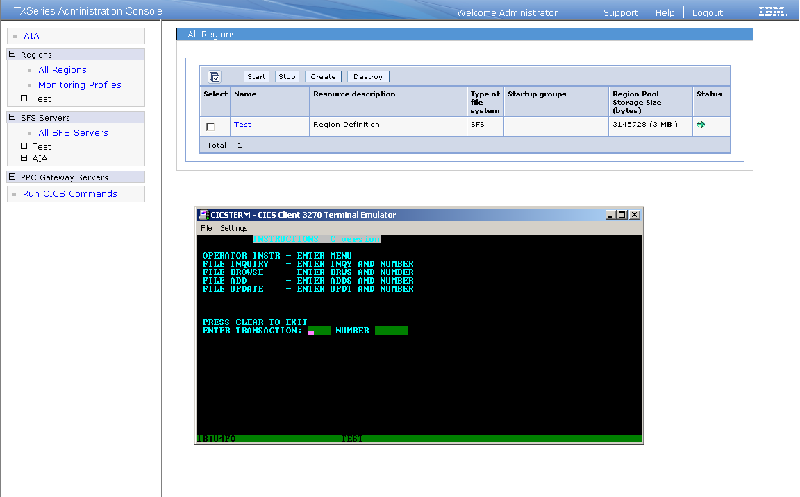
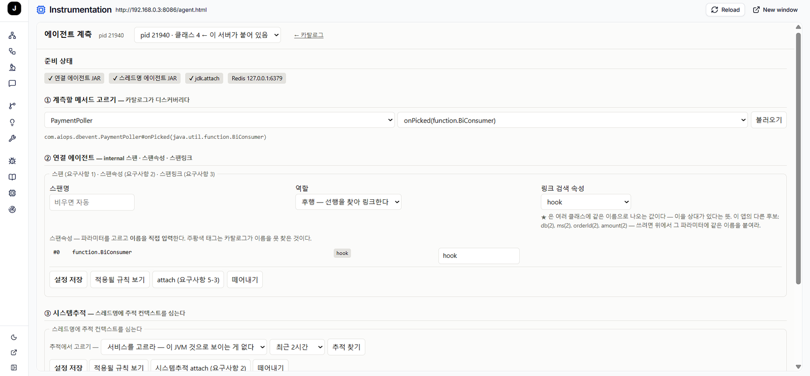

1. At a Glance
This demo mirrors a financial institution's real operating environment, running a system that mixes microservices and legacy with AIOps. It shows how the reality of modern services and aging back-end systems running together is observed and acted on as a single picture.
- Mixed makeup — Many microservices + IBM CICS, SAP, and TUXEDO-based services.
- A single ontology — Binds services and resources together to analyze the root cause of problems.
- Two modes of operation — Supports both autonomous operations handled by AI and direct operations watched by people.
2. Makeup — Microservices and Legacy, on Kubernetes
The services are of mixed kinds, but they all run on Kubernetes (k8s).
| Component | Description |
|---|---|
| Microservices | Many modern services running on Kubernetes |
| IBM CICS | Mainframe service handling back-end transactions |
| SAP | ERP-class service handling core business |
| TUXEDO | Middleware service handling distributed transactions |
| Kubernetes | The execution foundation on which all these services run |





3. Ontology — Combining Services and Resources
The ontology binds together services (what they do) and resources (where they run). On that foundation, it analyzes the causes of problems that surface during operations.
- Latency — Finds the segments where responses slow down.
- Bottlenecks — Pinpoints where the flow gets blocked.
- Shortfalls — Reveals where resources fall short.
- Saturation — Isolates resources that have reached their limit.
4. Autonomous Operations — Workflows and Tracing
Root cause analysis is handled by autonomous operations. Without people chasing every detail, a defined procedure runs on its own to find the cause and carry it through to action.
- Workflows — Automatically step through the diagnosis and remediation procedure.
- Trace — Follows calls that cross between services to build evidence.
5. Human-Watched Operations — Anomaly Detection and Chat
When people operate directly, anomaly detection first signals the symptoms and chat is used to ask about and answer on the situation. Autonomous and direct operations are not replacements for each other; they are used together as the situation calls for.
| Dimension | Autonomous Operations | Human Operations |
|---|---|---|
| Method | Workflow + trace | Anomaly detection + chat |
| What it does | Root cause analysis and remediation, automatically | Catches symptoms first, then diagnoses through dialogue |
| The human role | Only decides whether to approve | Asks and judges directly |
Regardless of microservices or legacy, it binds them into a single ontology and analyzes the causes of latency, bottlenecks, shortfalls, and saturation. Autonomous operations help through workflows and tracing, direct operations through anomaly detection and chat — together.